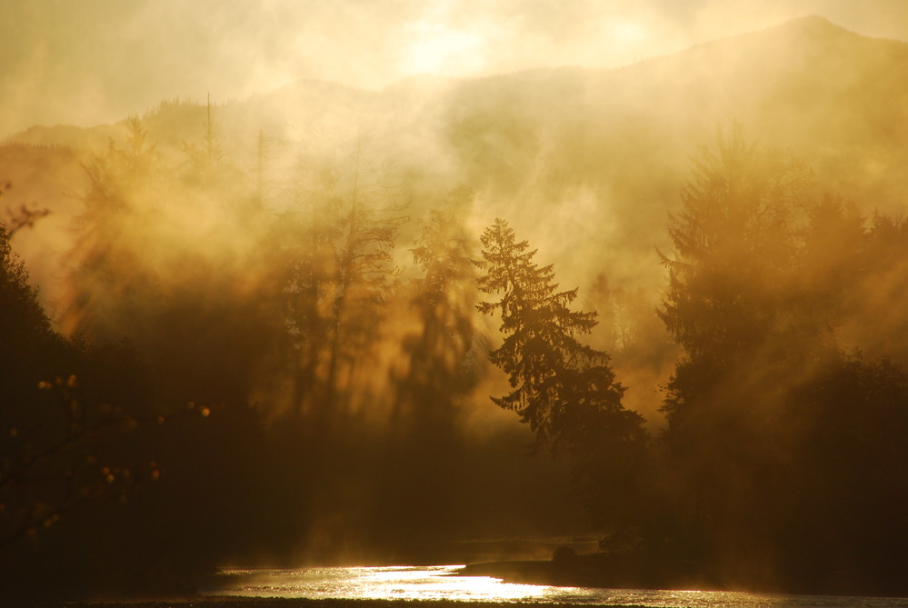
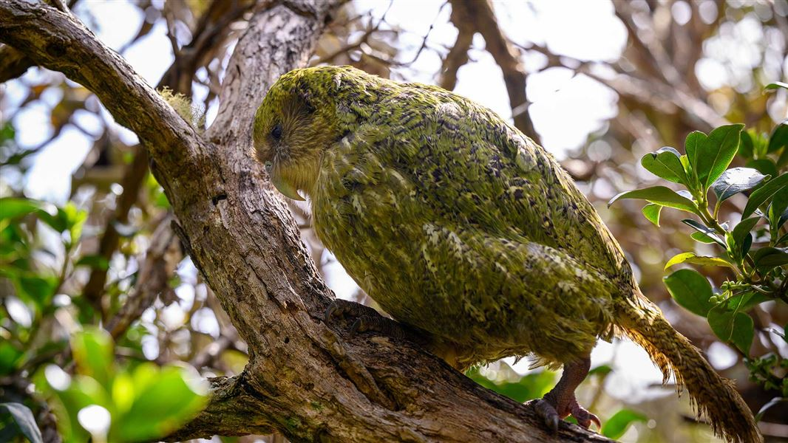
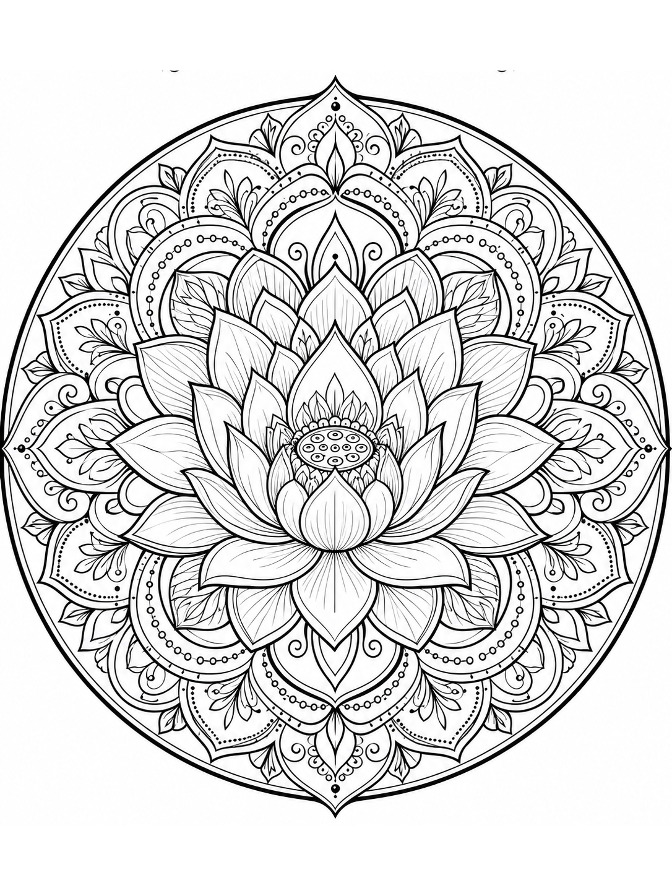
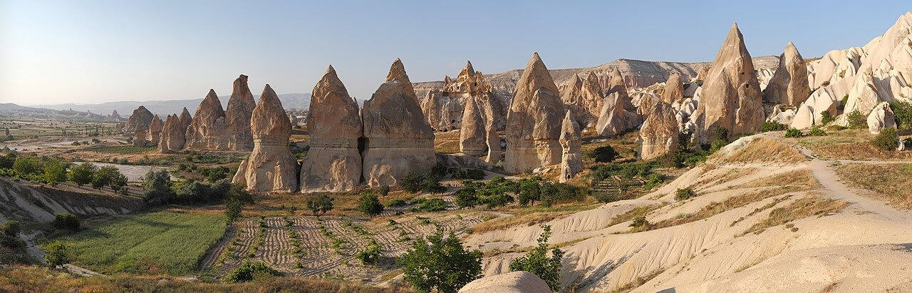

Natural Wonders
The Hoh Rain Forest
Twelve Feet of Rain, One Square Inch of Silence
In the Hoh Rain Forest, rain is not just weather but a force that shapes trees, moss, rivers, and silence itself.
Read story →
Natural Wonders
Twelve Feet of Rain, One Square Inch of Silence
Stories of rare flowers, remarkable creatures, and extraordinary places — told with curiosity, care, and respect for the natural world.
Read the StorySunrise in the Hoh Rain Forest, Olympic National Park. Photo: NPS/Jon Preston. Public domain.
Latest Stories
Twelve Feet of Rain, One Square Inch of Silence
In the Hoh Rain Forest, rain is not just weather but a force that shapes trees, moss, rivers, and silence itself.
Read story →
New Zealand’s moonlit, flightless, remarkably heavy parrot — and the patient work of bringing it back from the edge of extinction
On Whenua Hou, the night carries a deep, resonant boom—the courtship call of one of the world’s rarest and most unusual parrots.
Read story →
A single-celled creature too small to notice in open water has been building radial geometry long before humans gave such patterns names.
Radiolarians are single-celled ocean organisms that build intricate silica skeletons—tiny natural geometries hidden beneath the waves.
Read story →
A Landscape Sculpted by Fire, Carved by Faith
Across central Anatolia, the valleys around Goreme look less like a conventional landscape than the remains of an unfinished dream. Pale towers rise from the valley floor in clusters.
Read story →Explore by Theme
Books
Thoughtfully designed notebooks inspired by rare flowers, remarkable creatures, and extraordinary places.